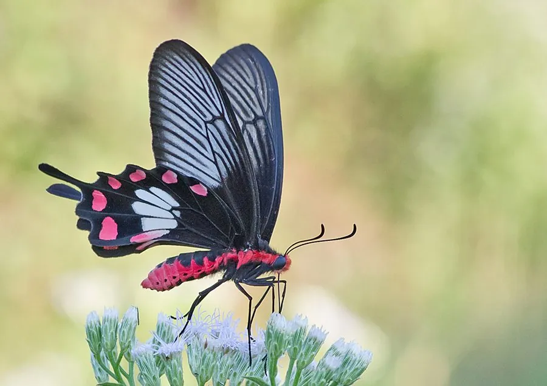

昆虫 · 动物界
红珠凤蝶 Pachliopta aristolochiae

黑色翅面缀红色珠状斑纹的凤蝶，幼虫取食马兜铃并储存毒素，是其他蝴蝶争相拟态的有毒物种，亚洲常见。
- 分类
- 门节肢动物门纲昆虫纲目鳞翅目科凤蝶科属珠凤蝶属
- 栖息环境
- 林缘、灌丛、花园与马兜铃生长地
- 地理分布
- 中国南方、东南亚和南亚地区
- 保护级别
- 暂无评估
物种志
红珠凤蝶翅展约 8–10 cm，翅面黑褐色，后翅中部有数个红色珠状斑块，外缘有白色或红色月牙斑，尾突细长。红色斑块像一串珠子，因此得名。它属于有毒蝶类，体内含有从马兜铃中获得的毒素。
它生活在林缘、灌丛、花园和马兜铃生长的地方，成虫飞行缓慢，喜欢访花。雌蝶把卵产在马兜铃的叶片上，幼虫取食马兜铃，并把毒素储存在体内，使鸟类等天敌避食。正因为有毒，红珠凤蝶成为多种蝴蝶的拟态对象，玉带凤蝶的雌蝶就模仿它的花纹。它分布于中国南方、东南亚和南亚，是热带亚热带地区常见的凤蝶。它的蛹呈褐色，挂在马兜铃的茎上，不仔细看很难发现。
形态与习性
- 食性幼虫取食马兜铃；成虫吸食花蜜
- 翅展约 8–10 cm
- 特征黑色翅面，后翅有红色珠状斑块
- 防御幼虫储存马兜铃毒素，使天敌避食
- 拟态玉带凤蝶雌蝶等会模仿它的花纹
趣味知识
- 红珠凤蝶后翅的红色斑块像一串珠子，因此得名。
- 它把马兜铃的毒素储存在体内，鸟类吃了会不舒服。
- 玉带凤蝶的雌蝶会模仿红珠凤蝶的花纹，以躲避天敌。